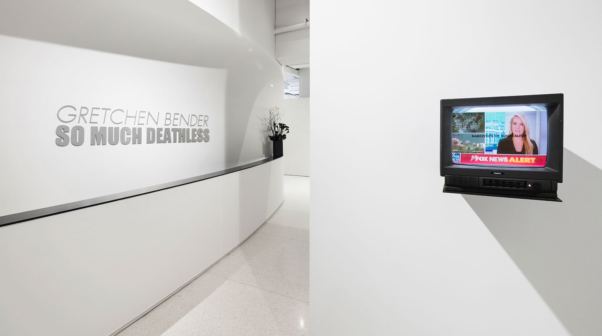
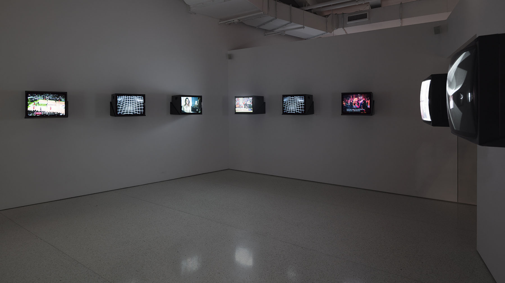
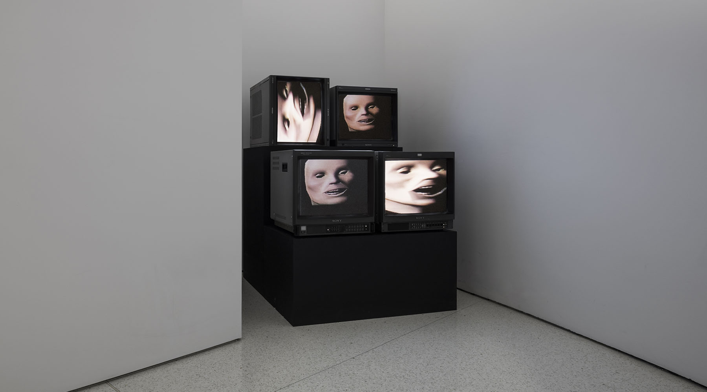
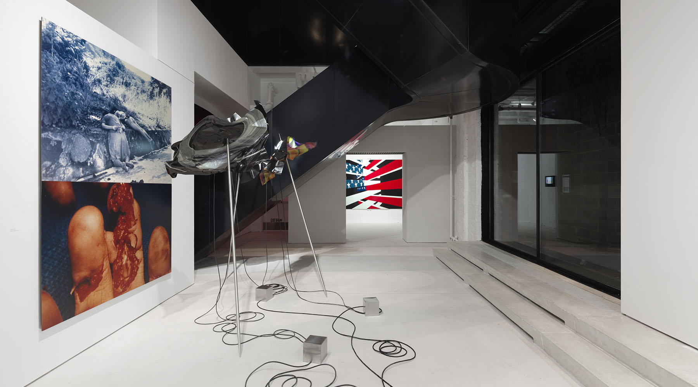
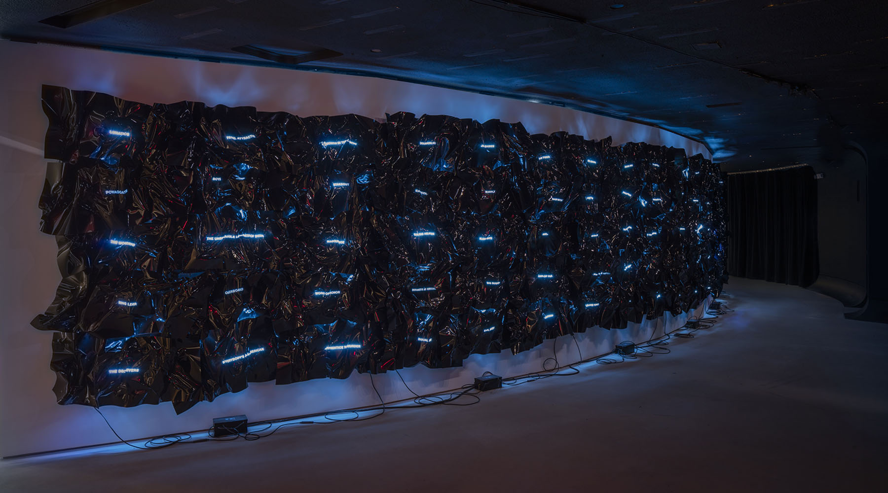
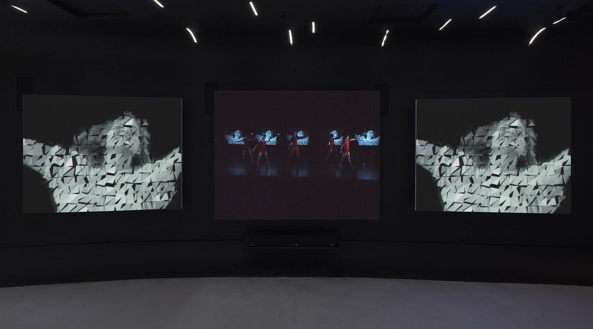
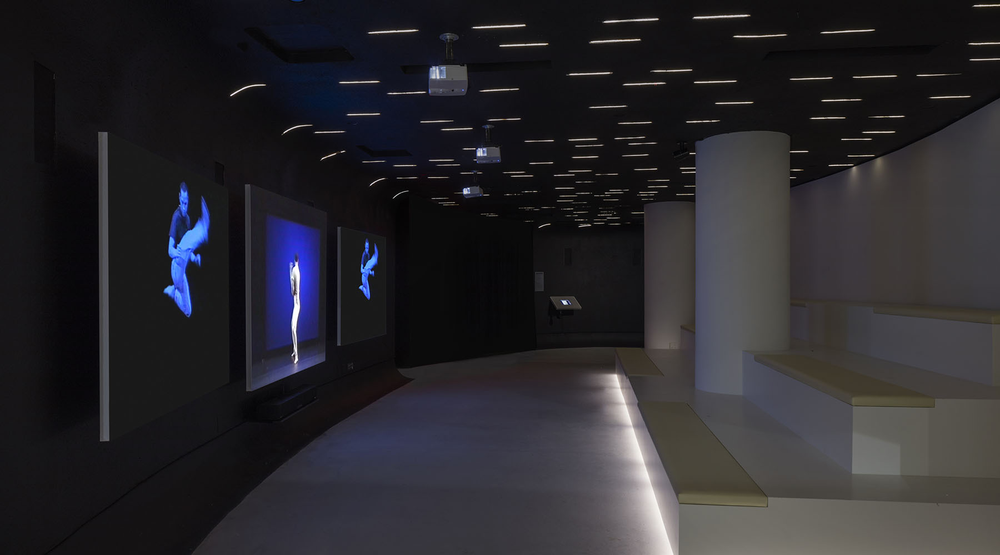

Gretchen Bender: So Much Deathless is the first posthumous retrospective presenting the life and work of the new media artist Gretchen Bender (1951–2004). In addition to presenting works across video, sculpture, computer graphics, photography, print and installation, the exhibition brought together archival materials and a robust oral history featuring friends and collaborators: Robert Longo, Vernon Reid, Bill T. Jones, Amber Denker, Stuart Argabright, Vera Dika and many more. Organized in collaboration with the Gretchen Bender Estate.
The exhibition was accompanied by public programming organized into four categories—Meet the Makers, Virtual Histories, Exhibition Tours, and Off-Site Programs. In addition to daily screenings, we presented a live score of Bender’s largest work of “electronic theatre,” Total Recall (1987), performed by the original composer Stuart Argabright. At the Brooklyn-based performance venue ISSUE Project Room, we presented a special evening of experimental music and audio-visual expansion dedicated to So Much Deathless, the title of Bender’s third and final electronic theater piece, left unrealized due to her passing in 2004. Exhibition tours led by friends, artists, and contemporaries of Bender included Michelle Grabner, Amber Denker, Cay-Sophie Rabinowitz, and Peter Nagy.
The exhibition was accompanied by public programming organized into four categories—Meet the Makers, Virtual Histories, Exhibition Tours, and Off-Site Programs. In addition to daily screenings, we presented a live score of Bender’s largest work of “electronic theatre,” Total Recall (1987), performed by the original composer Stuart Argabright. At the Brooklyn-based performance venue ISSUE Project Room, we presented a special evening of experimental music and audio-visual expansion dedicated to So Much Deathless, the title of Bender’s third and final electronic theater piece, left unrealized due to her passing in 2004. Exhibition tours led by friends, artists, and contemporaries of Bender included Michelle Grabner, Amber Denker, Cay-Sophie Rabinowitz, and Peter Nagy.

Untitled (Narcotics of Surrealism), 1986. Live television broadcast on a 14” CRT monitor, vinyl lettering, shelf. 13 ¾ x 14 x 17 in. Installation view of Gretchen Bender: So Much Deathless at Red Bull Arts New York, 2019. Photo by Lance Brewer. All artwork © The Gretchen Bender Estate.

Aggressive Witness - Active Participant, 1990, live television broadcast on 8 monitors, vinyl lettering; black and white computer-generated film on 4 monitors; 19:41 minutes with soundtrack by Stuart Argabright. Installation view of Gretchen Bender: So Much Deathless at Red Bull Arts New York, 2019. Photo by Lance Brewer. All artwork © The Gretchen Bender Estate.

Installation view of Gretchen Bender: So Much Deathless at Red Bull Arts New York, 2019. Photo by Lance Brewer. All artwork © The Gretchen Bender Estate.

Gretchen Bender: So Much Deathless at Red Bull Arts New York, 2019. Photo by Lance Brewer. All artwork © The Gretchen Bender Estate.

Wild Dead I, II, III (Danceteria Version), 1984. Two channel video on CRT monitors with soundtracks by Stuart Argabright and Michael Diekmann. Installation view of Gretchen Bender: So Much Deathless at Red Bull Arts New York, 2019. Photo by Lance Brewer. All artwork © The Gretchen Bender Estate.

Total Recall,1987. Installation view of Gretchen Bender: So Much Deathless at Red Bull Arts New York, 2019. Photo by Drew Reynolds. All artwork © The Gretchen Bender Estate.
SELECTED PRESS
Art in America, by Nora Khan
Frieze, by Masha Tupitsyn
Artforum, by Lane Relyea
COLLABORATORS
Chief Curator: Maxwell Wolf
Associate Curator/Oral History Interviewer: Kenta Murakami
Curator of Public Programs/Oral History Interviewer: Candice Strongwater
Exhibition Manager: Kyle Clairmont Jacques
Art Director: Erin Knutson, with Design Assistant Serena Chen
Exhibition Designer: Robert Passov
A/V Manager: Gregory Kalliche
Design Technician: Kyla Chevrier
Gallery Managers: Jenny Slattery/Elene Damenia
Communications Manager: Kirsten Nicholas
Partnerships: Kim Robinson
Editorial Advisor: Tamalyn Miller
Time-Based Media Conservator: Maurice Schechter

Installation view of Gretchen Bender: So Much Deathless at Red Bull Arts New York, 2019. Photo by Lance Brewer. All artwork © The Gretchen Bender Estate.

People in Pain, 1988 / 2014. Ninety titles, silkscreen on paint and heat set vinyl, neon, transformers. 84 x 560 x 11 in. Installation view of Gretchen Bender: So Much Deathless at Red Bull Arts New York, 2019. Photo by Lance Brewer. All artwork © The Gretchen Bender Estate.

Edited documentation of Still/Here, 1994. Choreographed and directed by Bill T. Jones. Visual concept and environment: Gretchen Bender. Installation view of Gretchen Bender: So Much Deathless at Red Bull Arts New York, 2019. Photo by Lance Brewer. Courtesy the Gretchen Bender Estate, Bill T. Jones/Arnie Zane Company, and New York Live Arts.

Installation view of Gretchen Bender: So Much Deathless at Red Bull Arts New York, 2019. Photo by Lance Brewer. All artwork © The Gretchen Bender Estate.
PROGRAMS
Meet the Makers
Originally presented at the Donnell Media Center on 53rd Street, Meet The Makers was a long-standing series that invited artists, media activists, and film organizers to screen and discuss their work. On occasion of Gretchen Bender: So Much Deathless, we reprised this groundbreaking platform, celebrating the Reserve Film and Video Collection’s rich history of media arts education and connecting Bender to our current community of media makers. Organized in collaboration with The Reserve Film and Video Collection of the New York Public Library for the Performing Arts (formerly DMC), featuring Eva & Franco Mattes, Pamela M. Lee, Solveig Nelson, Meriem Bennani, Jlin, DIS, Rick Prelinger, Shu Lea Cheang.
Virtual Histories
A special series of film and video screenings that used Bender’s notion of deathlessness as a framework. The program presented short video works and feature films by artists who explore multi-dimensional memory, alternative scenarios, and imaginary time, featuring films by Antoni Muntadas, Jacolby Satterwhite, Andrew Norman Wilson, Robert Longo, and special selections from the Gretchen Bender Estate.
Total Recall (1987) Revisited
Composer Stuart Argabright returned to his soundtrack for Bender’s landmark work Total Recall (1987) with a live score.
Image Haze: A Tribute to Gretchen Bender’s So Much Deathless
An audio-visual performance featuring Stuart Argabright and Black Rain, Philip Vanderhyden, and Kaitlyn Aurelia Smith. Co-presented with ISSUE Project Room. The evening began with a performance by Bender’s frequent collaborator Stuart Argabright and his post-industrial band Black Rain. It was set against a new video score by artist Philip Vanderhyden. The second act featured an interactive performance by electronic musician Kaitlyn Aurelia Smith, who presented her recent album, Tides: Music for Meditation and Yoga.